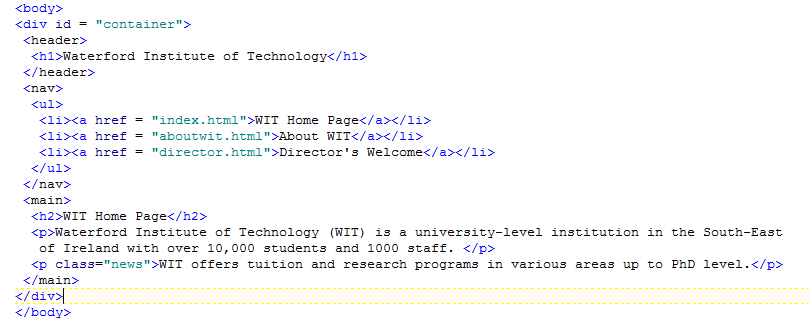
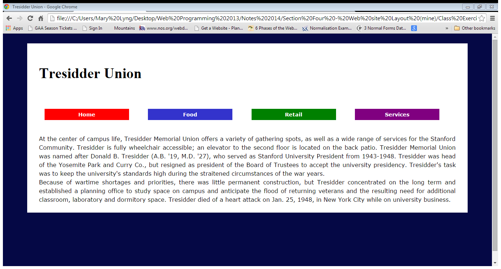

In this lab, you will learn how to create a horizontal navigation menu. Complete the first exercise detailed in steps 1, 2 and 3 (WIT website); then, complete the additional exercise at the end (Tresidder Union).
In this lab we will add and style structural elements to create another look for our WIT website: a horizontal navigation menu that looks as follows:
Download lab04.zip and extract it into your Week 8 folder. (Don't continue with the same WIT website files that you worked with in Lab 01; instead, download lab04.zip and start fresh. We want to create a totally different layout for the site in this lab.)
Modify the .html files as follows:
<body> tag add a div called container (i.e. <div id = "container">).<h1> tag and the closing header tag should be after the closing </h1> tag.<nav> tags around the <ul> (the unordered list contains a list of links which are the navigation for the site.)</nav> tag, put a <main> tag. The main element should surround the rest of the content on the page (the h2 heading and two paragraphs).<body> tag) including the closing tags for the main element and the container div (i.e.</main></div>)
Add the following selectors to the .css file (mycss.css):
All the web site content will reside in the container division; here we add a background colour, margin, and a width of 90%.
#container {
background-color:#9fB6CD;
width:90%;
margin:2% auto;
}The header structural element will have padding of 2em.
header {
padding:2em;
}The navigation structural element has a background colour of #616e7d.
nav {
background-color:#616e7d;
}The main structural element has padding of 0.5m (top and bottom), 2em (left and right), and the text is justified.
main {
padding:.5em 2em;
text-align:justify;
}After adding these CSS styles, your website should look as follows:
We will now add the styles for the navigation links. As you can see in the HTML files, the navigation for the site is an unordered list that contains a number of links. Add the following styles to mycss.css:
Add padding of 0.5em to the unordered list; use nav ul to target only the unordered list in the nav section (so that any other lists on the website won't be affected by these styles)
css
nav ul {
padding:0.5em;
}Each list item will have a margin of 0 on the top and bottom and 2% on the left and right. The display is inline; this is the part that makes the nav links horizontal, all appearing on the same line.
nav ul li {
display:inline;
margin:0 2%;
}The a:link and a:visited states are styled white, with no underline, the hover state is gray with a lightgray background, and the active state is yellow. Note that we use descendant selectors (e.g. nav ul li a:link) to ensure that only the navigation links are affected, and not other links on our site.
nav ul li a:link, nav ul li a:visited {
text-decoration: none;
color: white;
}
nav ul li a:hover {
color:gray;
background-color:lightgray;
}
nav ul li a:active {
color: yellow;
}nav ul li a{
display:inline-block;
background-color:#6C7B8B;
width:13em;
padding:0.5em 0;
text-align:center;
font-weight:bold;
font-size:90%;
}The website should now looks as follows:
See the full website here: WIT Website Example
In this exercise you are to create a different layout for the Tresidder Union website. You should add structural elements to the HTML file and then add styles to the CSS file, so that the website looks as follows:

Download lab05.zip and extract it into your Week 8 folder. (Again, don't continue with the same website files that you worked on earlier; the aim is to create a different layout for the Tresidder site, starting from scratch.)
The 4 different colours for the link items are red; #3333CC; green; and purple.